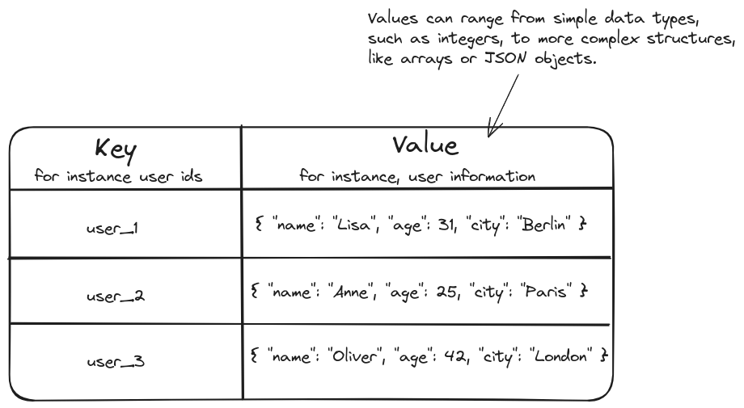
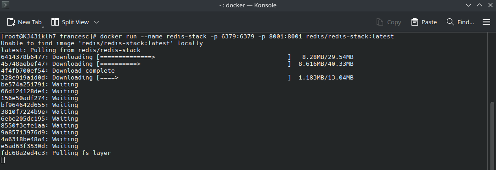

Data-driven web applications basics: Improving the architecture
Redis
cache
Celery
batching
Published
February 23, 2025
In the previous posts of our series on building data-driven web applications, we developed a web application that allows users to submit their favorite websites and view a ranking of the most popular sites based on those submissions. We began by setting up the basic structure of the app using Flask, a lightweight web framework, and then integrated a PostgreSQL database to store user submissions, ensuring data persistence. Next, to leverage the stored data, we created a new page, the Top Favorite Websites page, where users could view the most popular websites based on the number of submissions. Finally, we contaibnerized the application using Docker to streamline deployment across different environments and facilitate scalability.
Now that the app is fully functional, we may start to think about deploying it for real-world usage. However, before moving forward, we need to evaluate whether there are any potential bottlenecks or areas of the application that might cause issues under real-world conditions. To do so, let’s take a moment to refresh our memory on how our application operates by reviewing what each page of the application does.
The Home page serves as the data submission component of the application. Here, users interact with the system by submitting their favorite website URLs. The page contains a simple form where users can input the URL of a website they want to submit. Upon entering a URL and clicking the Register URL button, the backend performs input validation to ensure that the submitted URL is properly formatted and valid. This step is crucial to prevent invalid data from being stored in the database. If the validation is successful, the URL is then stored in a PostgreSQL database. Once the URL has been successfully added to the database, the user receives a confirmation message indicating that their submission was successful.
In contrast, the Top Favorite Websites page serves as the data presentation component of the application. This page provides a user-friendly interface where users can view the ten most popular websites based on the submissions from the Home page. When a user accesses this page, the backend queries the database to count how many times each website has been submitted. These counts are then sorted in descending order, with the most frequently submitted websites appearing at the top of the list. The data is dynamically processed and used to render a table on the page, displaying the ten most popular websites.
All this information is graphically summarized in Figure 1.
Figure 1: Application interaction and data flow diagram
Upon examining the current architecture, a critical issue emerges: the application design places a significant and potentially unsustainable load on the database during periods of high user activity. This problem arises from the way data is handled in both the Home page and the Top Favorite Websites page. While the initial implementation worked well during development, it poses significant scalability challenges as the user base and data volume grow. Let’s delve deeper into the specific issues, analyzing each page to understand why the current design struggles under increasing demand.
Home page: URL Submission and database inserts
The Home page allows users to submit URLs, which are subsequently stored in a PostgreSQL database. Each submission triggers an individual insert operation, adding the URL to the registered_urls table. While this straightforward approach works well under low-traffic conditions, it introduces significant challenges during periods of peak usage.
Consider a scenario where a surge of users simultaneously submits URLs. In such cases, the system processes each request independently, with every submission initiating a new insert operation. This creates a flood of database insertions, generating a substantial load on the database.
A potential solution to this issue is to group multiple submissions into a single insert operation. Rather than processing each submission individually, submissions can be aggregated and inserted in one batch. For instance, instead of executing ten separate insert commands for ten submissions, the system could combine these into a single operation that inserts all ten URLs simultaneously. This reduces the number of database writes, alleviating system load and enhancing performance during high-traffic periods. This method of consolidating tasks or operations to process them collectively is known as batching.
To implement batching effectively, we can introduce a queue—a data structure that temporarily holds and organizes incoming submissions—to manage the process. When users submit URLs, these submissions are stored in the queue, which accumulates them over a short time interval or until a predefined threshold is met. Once the batch is ready, the system processes all submissions in a single insert operation.
To better illustrate this, let’s consider an example, Over a short period, three users submit URLs: User 1 submits www.google.com as one of their favorite websites, User 2 also submits www.google.com, and User 3 submits www.facebook.com. These URLs are stored in the queue as they arrive. After some time, once the system determines that enough submissions have accumulated or the predefined time interval has passed, it checks the queue and processes the entire batch. All the URLs are then inserted into the database in a single insert operation, reducing overhead and improving efficiency. This example is schematically represented in Figure 2.
Figure 2: Schematic example of URLs submission batching process
Defining implementation details
Now that we have a clearer understanding of the problem and the proposed solution, let’s dive into the implementation details.
The first step is to establish a queue system that temporarily stores and organizes incoming URL submissions before processing them in batches. This queue must be fast, scalable, and capable of efficiently handling a high volume of submissions, particularly during peak traffic periods. To meet these requirements, we’ll use Redis, a high-performance, in-memory key-value database. Redis is an excellent choice for this task due to its ability to perform rapid read and write operations entirely in memory, ensuring minimal latency and high throughput.
Key-value databases
A key-value database is a type of NoSQL database that stores data in the form of key-value pairs. In this structure, each key serves as a unique identifier, linked to a corresponding value. The value can be a simple data type, such as an integer, or a more complex structure like JSON, lists, or even BLOBs. Figure 3 shows a simple example of a key-value database.

Figure 3: Simple example of a key-value database
Unlike traditional relational databases, key-value databases do not use a query language like SQL for searching or manipulating data. Instead, data is accessed solely through its unique key, which simplifies the database design and makes it highly efficient for specific use cases.
This simplicity and direct access mechanism enable key-value databases to easily scale horizontally across multiple servers. This same simplicity also contributes to their optimization for fast data retrieval, making them ideal for applications that require quick access to data.
Due to these characteristics, key-value databases excel in scenarios that involve high volumes of small, frequent read and write operations, such as session management, caching, and queue management.
In this system, Redis will serve as a temporary storage layer for submitted URLs. When users submit URLs, these will be added to the Redis queue instead of being immediately written to the PostgreSQL database. To achieve this, we’ll modify the backend logic to enqueue submissions into Redis, decoupling the submission process from the database writes. This approach ensures that the database is not overwhelmed by frequent, individual insert operations during periods of high activity.
To process the enqueued submissions, we need a mechanism that periodically retrieves and removes the accumulated data from Redis, groups the submissions into a single insert query, and writes them to the PostgreSQL database. This processing will occur at regular intervals—every 5 minutes in this case. For this task, we’ll use Celery, a distributed task queue that supports asynchronous background task management. Celery will be configured to run a scheduled task that monitors the Redis queue, retrieves all enqueued URLs, consolidates them into a batch, removes them from the queue, and executes a bulk insert operation into the database.
Celery in a nutshell
Celery is an open-source asynchronous task queue for distributed task execution. It enables applications to handle background tasks by offloading time-consuming operations to worker processes, which execute them asynchronously.
Celery consists of three main components:
Tasks: Individual jobs that need to be executed asynchronously, such as sending notifications or generating reports. Tasks can also run synchronously if needed.
Workers: Background processes fetch and execute tasks from a queue. Celery can distribute tasks across multiple workers or machines, enabling dynamic scaling based on workload.
Messages: Communication pieces that hold the details of tasks. Each message in the queue specifies what needs to be done. Workers then pull these messages to identify and perform the corresponding tasks.
To manage task communication, Celery relies on a message broker. A message broker is a middleware system that facilitates the exchange of messages between producers (applications that generate tasks) and consumers (workers that execute them). For instance Redis can be used as a message broker.
Here’s how it works in practice: The application (the client) sends tasks in the form of messages through the message broker, such as Redis. These messages are enqueued, awaiting execution. When a worker becomes available, it connects to the broker, checks the queue for pending tasks, and processes them as needed.
Figure 4 visually illustrates the updated architecture when submitting URLs on the Home page. Whenever a user submits a URL, such as www.google.com, it’s added to the Redis queue. Every 5 minutes, a Celery worker processes the queue and inserts all the URLs in a batch to the PostgreSQL database.
Figure 4: Home page interaction and data flow diagram with Redis and Celery integration
Top Favorite Websites page: Querying for popular URLs
The issues are even more pronounced in the implementation of the Top Favorite Websites page. The design relies on querying the PostgreSQL database each time a user accesses the page. Specifically, for each user, the backend counts the occurrences of each submitted URL, sorts these counts in descending order, selects the top ten, and retrieves the results.
As the number of users grows, multiple users may access the Top Favorite Websites page simultaneously, triggering the same query multiple times, causing the database to process identical queries, each producing the same result. Even if the queries aren’t executed at the exact same time, but within a short time span, the outcome is still unlikely to change significantly. Despite this, the system continues to execute the same query for each user, leading to redundant database operations and unnecessary strain on the system.
Additionally, the impact of these repeated queries intensifies as the number of stored URLs increases. As the dataset grows, the complexity of the query increases as well. While counting and sorting a small dataset of hundred URLs might be fast, this process becomes more resource-intensive as the dataset expands to thousands or even millions of entries.
Potential improvement: Optimizing performance through reusable results
To address this challenge, rather than running a separate database query for each simultaneous user accessing the Top Favorite Websites to count the total number of submissions for each URL, we can compute the results once and reuse them for all users who visit the page simultaneously.
However, the redundancy in our current implementation extends beyond simultaneous users. The top ten websites are unlikely to change notoriously in short time spans, even as new submissions are added. This means that the results of our query remain largely valid not only for users accessing the page at the same time but also for users accessing it within a brief window of time. Recognizing this, we can push optimization further by reducing the frequency of queries even more. Instead of recalculating the top ten websites for every request or even every simultaneous batch of requests, we could calculate it periodically—say, once every thirty minutes—and reuse the same result for all users accessing the page during that interval.
Therefore, we can periodically precompute the results and temporarily store them in memory. By doing so, we can directly serve the precomputed results to users without needing to repeatedly query the database. This technique, known as caching, allows us to store frequently requested data temporarily and avoid redundant operations, thereby speeding up response times for future requests.
Defining implementation details
Now that we know what needs to be done, let’s specify how to implement it. The first step is to set up a cache to store the precomputed list of the top ten most submitted URLs. Redis is an ideal choice for this because it’s an in-memory data store, meaning it can retrieve and store data much faster than traditional disk-based databases. Caching relies on low-latency access to data, and Redis is specifically designed for this purpose.
To populate and update this cache with data from PostgreSQL, we can use Celery to schedule periodic tasks. These tasks will query the PostgreSQL database, compute the top ten most submitted URLs, and update the Redis cache accordingly.
Once the cache is in place, we’ll modify the backend to fetch the precomputed data directly from Redis instead of querying the PostgreSQL database every time a user visits the Top Favorite Websites page.
Figure 5 visually illustrates the updated architecture for displaying the Top Favorite Websites page. When a user visits this page, the backend fetches a precomputed table of popular URLs directly from Redis.
In the background, a Celery worker runs every 30 minutes. It connects to the PostgreSQL database, extracts the top 10 most popular URLs, and updates the cached table in Redis.
Figure 5: Top Favorite Websites page interaction and data flow diagram with Redis and Celery integration
Bringing it all together
With the implementation of these updates, the backend architecture has been transformed to address scalability challenges and efficiently handle high-traffic scenarios. Previously, the backend directly queried the PostgreSQL database for every user request, creating significant performance bottlenecks during peak activity. By integrating Redis as an intermediary layer for both submission handling and caching, the system now reduces database load and improves responsiveness.
For the Home page, URL submissions are no longer written directly to the database. Instead, they are added to a Redis queue, decoupling user interactions from immediate database operations. A Celery worker processes the queue every five minutes, batching submissions into a single bulk insert to PostgreSQL. This reduces the frequency of database writes, ensuring smooth performance even under heavy traffic.
The Top Favorite Websites page has been similarly optimized. Instead of querying the database for every user request, the backend now retrieves precomputed results from a Redis cache. These results, representing the top ten most submitted URLs, are updated every thirty minutes by a Celery worker that queries PostgreSQL, calculates the top URLs, and refreshes the cache. This eliminates redundant queries and ensures faster response times.
These enhancements are visually summarized in Figure 6, highlighting how user interactions with the two pages are now handled. This is a significant improvement over the previous architecture, depicted in Figure 1, where user interactions directly accessed the PostgreSQL database, leading to performance bottlenecks during peak usage.
Figure 6: Application interaction and data flow diagram with Redis and Celery integration
Implementing these changes into our application
Having identified the key areas for improvement and outlined the necessary changes, we are now ready to implement these optimizations. To achieve this, we will need to set up Redis, integrate Celery for task scheduling, and create the necessary background tasks to handle the periodic processes. Additionally, we’ll update the backend logic to interact with Redis instead of directly querying the PostgreSQL database. Let’s walk through each of these steps in detail.
Setting up Redis
The first step in implementing these changes is to set up Redis, which will serve two critical roles: as a cache for the Top Favorite Websites table and as a queue for managing URL submissions from the Home page.
One of the simplest and most efficient ways to use Redis is through its official container images. Essentially, Redis offers two official Docker images:
redis/redis-stack-server: A lightweight image that includes only the Redis Stack server. This image is ideal for production deployments.
redis/redis-stack: This image includes both the Redis Stack server and RedisInsight, making it perfect for local development as you can leverage the integrated RedisInsight tool to visualize and manage your data.
Redis provides detailed documentation on how to download and use these images, which can be found at the following link: Redis Docker Installation Guide.
In our case, we’ll go with the redis/redis-stack image to take advantage of RedisInsight, which will make it easier to debug and monitor the data flow during the development process.
RedisInsight
RedisInsight is a graphical user interface (GUI) tool for Redis that enables you to visualize, interact with, and manage data stored in a Redis database. It provides an intuitive way to explore datasets, execute queries, inspect keys, monitor performance, and perform various data management tasks.
To download and run the Redis container, we will execute the following command in the terminal:
docker run --name redis-stack -p 6379:6379 -p 8001:8001 redis/redis-stack:latest
This command instructs Docker to create and start a container using the redis/redis-stack:latest image. The --name redis-stack flag assigns the container a recognizable name (redis-stack) for easy management. The -p flags map ports between the container and the host machine, with port 6379 used by Redis for database connections and port 8001 used by RedisInsight, a web-based UI for managing and visualizing Redis data.
When you execute this command, Docker will first check if the redis/redis-stack:latest image is available locally. If it isn’t found, Docker will proceed to download the image from the Docker registry, as shown in Figure 7.
It’s important to note that the Docker engine must be running on your system for this command to execute properly.

Figure 7: Downloading and running the redis-stack image
After the image is successfully downloaded, Docker will automatically start the container. At this point, Redis will be up and running, accessible through port 6379, and RedisInsight will be available through port 8001, ready to provide a graphical interface for managing Redis.
Managing Docker containers
To view information about all the containers on your system, regardless of their current state (whether they are running or not), you can use the following command in the terminal:
docker ps -a
This command lists all containers on your system and provides details such as their names, the images they are based on, their creation time, and their current status.
Figure 8: docker ps -a output
Figure 8 shows an example of the output you’ll see after running this command. As you can see, the output of this command includes several columns with key information about each container:
CONTAINER ID: A unique identifier for the container, usually shown as a short alphanumeric string (e.g., 72cb722bfa5d).
IMAGE: The Docker image that the container is based on, such as redis/redis-stack:latest.
COMMAND: This column shows the command that is being executed inside the container once it starts running. For example, for a Flask application, this could be flask run.
CREATED: The timestamp indicating when the container was created.
STATUS: The current state of the container, such as running, exited, or paused.
PORTS: The ports exposed by the container and the corresponding ports on the host machine. For example, in the case of the redis-stack container, you can see 0.0.0.0:6379->6379/tcp. This means that port 6379 inside the container is mapped to port 6379 on the host machine, allowing external access to the container’s Redis service through that port.
NAMES: The names assigned to the containers. If you didn’t specify a name when creating the container, Docker will automatically assign a random name (e.g., gracious_tesla). If you did specify a name, it will appear here (e.g., redis-stack).
With the information provided by docker ps -a, you can manage the state of your containers using the following commands:
Start a Container: To start a stopped container, you can use the docker start command followed by the container name or ID. For example, to start the redis-stack container, you would run the following command:
docker start redis-stack
Stop a Container: To stop a running container, use the docker stop command. For example, to stop the redis-stack container, you would run the following command:
docker stop redis-stack
Accessing RedisInsight
With Redis and RedisInsight running, we can now access RedisInsight’s graphical interface by navigating to http://localhost:8001/.
Upon visiting this URL, the first thing we will need to do is accept the terms of service and configure the privacy settings for RedisInsight, as shown in Figure 9.
Figure 9: Accepting RedisInsight terms and configuring privacy settings
Once we have accepted the RedisInsight terms of service, we will be directed to the main page where we can explore our Redis database, as well as create new keys, as shown in Figure 10.
Figure 10: RedisInsight main page
On this page, we can see two main panels. The left panel displays all the keys in our Redis database. Since we haven’t created any keys yet, it’s currently empty. The right panel will allow us to explore the details of any key we click on, displaying the contents stored in that key.
Connecting to Redis
Now that Redis is up and running, it’s time to integrate it with our application. Similar to how we connected to our PostgreSQL database earlier in the project, we need to configure our application to interact with Redis.
To ensure that connection details are managed securely and are not hardcoded into our application, we’ll store them in the .env file. To do so, we will open the .env file and add the following lines to specify the Redis connection details:
REDIS_HOST='localhost'REDIS_PORT='6379'
Next, we can establish a connection to Redis by using the redis Python library, which provides a simple and efficient interface to interact with the Redis database.
If the redis library isn’t already installed, you can add it by running the following command:
pip install redis
With the redis library installed and the environment variables already placed into the .env file, we can now import the redis library, retrieve the connection details from the .env file, and establish a connection to the Redis server with the following code:
The redis.Redis() class is a central part of the Redis Python library, acting as an interface to interact with the Redis server. When you create an instance of this class, it establishes a connection to the specified Redis host and port. Allowing to execute Redis commands to manage data within the database.
To further organize the logic of connecting to Redis, we can create a custom RedisClient class. This class will handle the connection setup and provide a structured way to interact with Redis.
class RedisClient:def__init__(self, host: str, port: int):self.redis_host = hostself.redis_port = portself.connection =self._connect()def _connect(self) -> redis.Redis:try:# Create a connection to the Redis serverreturn redis.Redis(host=self.redis_host, port=self.redis_port)except redis.ConnectionErroras e:print(f"Failed to connect to Redis: {e}")raise
Now that we’ve set up our RedisClient class, we can easily create an instance of it by passing in the connection details that we retrieved from the environment variables. This will initialize the connection to Redis, allowing us to interact with the Redis server.
With redis_client now initialized, we can use redis_client.connection to perform any Redis operations, such as setting or getting data.
Logging
Logging is the process of recording information about events or actions that occur during the execution of a program. It gives developers and system administrators insights into the application’s performance and behavior, helping them monitor its status, detect issues, and troubleshoot problems efficiently.
For example, in our case, logging allows us to track key details such as when a task is triggered, how many URLs are processed, how long the process takes, and whether any errors occur during execution.
Logging in Python
Python provides a built-in logging library called logging, which allows us to log messages with varying levels of severity. By default, these messages are displayed in the terminal, but they can also be saved to log files for later analysis. This flexibility allows for detailed tracking, whether it’s for real-time monitoring or for post-execution reviews.
The different severity levels help categorize messages according to their importance, allowing us to focus on critical information while filtering out less relevant details. The five standard logging levels are:
DEBUG: Used for detailed, verbose messages that provide insights into the internal state of the program. This level is primarily useful during development and debugging.
INFO: Used for general messages that indicate the normal operation of the application, such as logging when a task starts or finishes.
WARNING: Used for potential issues that are not errors but may require attention. These are situations where something could go wrong in the future if left unaddressed.
ERROR: Used for errors that occur during execution, signaling that something has gone wrong, but the program can still continue running.
CRITICAL: Used for severe issues, indicating that the application may crash or become non-functional without immediate attention.
Configuring the Logging System
The Python logging library gives us a lot of control over how log messages are captured and handled. Using the basicConfig method, we can configure important aspects of the logging system, such as which messages should be recorded, their format, and where they should be saved. Unlike print statements, which are primarily for quick debugging and lack flexibility, logging allows for structured and customizable output that can be filtered and redirected as needed.
For example, if we want to capture messages of severity INFO and above (which includes INFO, WARNING, ERROR, and CRITICAL), we can set the logging level by using this method as follows:
logging.basicConfig(level=logging.INFO)
Once we’ve incorporate the logging library, we can enhance the visibility and traceability of our code’s behavior. For instance, in the RedisClient class we just created, we can replace the print statement with a logging call to capture errors in a more structured way. Here’s the improved class with logging:
import loggingclass RedisClient:def__init__(self, host: str, port: int):self.redis_host = hostself.redis_port = portself.connection =self._connect()def _connect(self) -> redis.Redis:"""Establish a connection to Redis."""try:# Create a connection to the Redis serverreturn redis.Redis(host=self.redis_host, port=self.redis_port)except redis.ConnectionErroras e: logging.error(f"Failed to connect to Redis: {e}")raise
Setting up Celery
With Redis successfully set up, the next step is to configure Celery, which will manage our background tasks. Celery will periodically check the Redis queue, process any URLs found, and transfer them to the PostgreSQL database. It will also precompute and cache the top ten most submitted URLs from the PostgreSQL database into Redis.
To get started with Celery, we first need to install the Celery library, which we can do by running the following command in a terminal:
pip install celery
In addition to Celery, we need a message broker to handle task messaging. Since Redis is already set up as our queue, we will configure Celery to use Redis as its message broker, taking advantage of our current setup and avoiding the need for an additional service.
Next, we need to set up Celery to run in the background by creating a new file named celery_app.py. In this file, we will define the Celery application, and specify Redis as the broker:
from celery import Celeryimport osfrom dotenv import load_dotenvload_dotenv()# Fetch Redis connection details from environment variablesredis_host = os.getenv('REDIS_HOST')redis_port = os.getenv('REDIS_PORT')# Define the Celery application and configure it to use Redis as the brokerapp_celery = Celery(broker=f"redis://{redis_host}:{redis_port}/0")
After setting up Celery, we can proceed to define the tasks that need to be executed.
Improving the Home page
With Redis and Celery already set up, we’re now ready to enhance the URL submission on the Home page. As we discussed earlier, we’re moving from directly inserting URLs into the database to enqueuing them in Redis for deferred processing. To implement this change, we’ll begin by replacing the direct database insertion with a Redis queue. Then, we’ll create a Celery task to process and transfer these enqueued URLs into our PostgreSQL database.
Replacing direct database insertion with a Redis queue
In the current implementation, each time a user submits a URL, the backend first validates its format to ensure it’s correct. After validation, the URL is immediately inserted into PostgreSQL using the insert_url_into_database function. Below is the original implementation for reference:
def insert_url_into_database(url: str) ->None:try: conn = connect_to_database() cur = conn.cursor() cur.execute("INSERT INTO registered_urls (url) VALUES (%s)", (url,)) conn.commit()exceptExceptionas e:print("Error inserting URL into the database:", e)finally: conn.close()
As previously discussed, the goal is to replace the direct insertion of URLs into PostgreSQL with a Redis queue. To achieve this, we will completely rewrite this function to enqueue the submitted URL into Redis instead of inserting it directly into the PostgreSQL database.
To implement this, we’ll use Redis’ RPUSH command. The RPUSH command inserts the specified values at the tail of a list stored at a given key. If the key doesn’t already exist, Redis will create it as an empty list before performing the push operation. In Python, we can execute this command using the rpush method, which is part of the Redis connection object. This connection object can be set up as described in the Connecting to Redis section. The rpush method takes two arguments: the key and the values we want to add to the list. In this case, we’ll name the key to store the urls as url_queue.
Here’s the updated function that enqueues submitted URLs into the Redis queue:
def enqueue_url_to_redis(url: str) ->None:try:# Push the URL to a Redis queue (list) redis_client.connection.rpush("url_queue", url) logging.debug(f"URL enqueued to Redis: {url}")exceptExceptionas e: logging.error("Error sending URL to Redis queue:", e)
Note that we replaced the print statement with a logging call to capture errors in a more structured manner. In addition, we added logging for successful URL enqueueing to Redis, providing better visibility for debugging and tracking the function’s behavior.
Once we’ve replaced the insert_url_into_database function with enqueue_url_to_redis, the next step is to update the process_url function. Previously, this function called insert_url_into_database to directly store URLs in PostgreSQL. Now, we’ll modify it to use enqueue_url_to_redis instead:
def process_url(url: str) ->str:if is_valid_url(url): enqueue_url_to_redis(url) confirmation_message ="You have successfully registered the following URL: "+ urlelse: confirmation_message ="The URL you entered is not valid. Please check the format and try again."return confirmation_message
After implementing these changes, it’s time to test everything. To accomplish this, we’ll start the application by opening a terminal in the directory where the app.py file is located and running the command flask run. Once the application is running, we can submit some URLs, such as www.google.com and www.facebook.com. Then, using RedisInsight, we’ll verify if the URL has been successfully added to the Redis queue. Specifically, we’ll verify that the url_queue key has been created and that it contains the submitted URL as shown in Figure 11.
Figure 11: Verifying submitted URLs in RedisInsight
Implementing a Celery task for Redis queue processing
Now that we’ve replaced direct database insertion with a Redis queue, the next step is to create a Celery task that will interact with Redis to process the enqueued URLs. This task will connect to the Redis database, check the queue for any submitted URLs, and, if any are found, batch them and insert them into the PostgreSQL database.
To get started, we’ll create a new file named celery_app.py. This file will serve as the central place for all the code related to our Celery tasks.
Once the file is created, we can begin implementing our task, which we’ll divide into two main phases: First, we’ll use our Redis connection to check the queue for any enqueued URLs and retrieve them if available. Then, we’ll proceed to batch the retrieved URLs and insert them into the PostgreSQL database. This approach ensures that each part of the task is clear and manageable
Extracting enqueued URLs
Before we begin extracting URLs from the Redis queue, we first need to establish a connection to Redis, just as we did for our Flask application. The same steps outlined in the Connecting to Redis section can be followed to set up the Redis connection.
Once the connection is in place, we can move on to the process of extracting URLs from the Redis queue. To do so, we will create a function designed to retrieve a specific number of values at a time. We’ll introduce a parameter called n to define the maximum number of values to retrieve.
It is important to note that when we say “extracting” URLs from the queue, we don’t just mean retrieving the values; we also need to ensure that they are removed from the queue after extraction. This is crucial to prevent the same URLs from being reprocessed in future tasks. Unfortunately, Redis doesn’t provide a built-in function to both extract and remove multiple items from the queue in a single operation.
To work around this, we can combine two Redis commands: LRANGE and LTRIM.
LRANGE: This command allows us to retrieve a range of elements from the Redis list (queue). To use it, we need to specify three parameters:
The key of the list.
The starting index from which to begin extraction.
The ending index where extraction should stop.
Redis lists maintain the order of elements, with items added according to the command used. In our case, we add URLs using RPUSH, which places new elements at the end of the list. As a result, the element at index 0 is always the oldest. To retrieve the n oldest URLs, we extract elements starting from index 0 up to n-1.
If the queue was populated using LPUSH, however, the item at index 0 would be the most recent, and we would extract accordingly.
LTRIM: This command allows us to retrieve a range of elements from the Redis list (queue), so that it will contain only the specified range of elements. To use it, we need to specify three parameters:
The key of the list.
The starting index from which to begin extraction.
The ending index where extraction should stop.
After extracting the processed items with LRANGE, we will use LTRIM to remove them from the list. Therefore, we will trim the list to include the elements starting from index n (the first unprocessed item) to -1 (the last item in the list).
In Python, we can execute these commands, just as we did with RPUSH, using a Redis connection and the corresponding methods: lrange and ltrim.
In a multi-worker environment, there is a risk of concurrency issues when executing LRANGE and LTRIM as separate commands. Other workers might modify the queue in between these operations—either adding new URLs or removing existing ones—leading to race conditions, incorrect deletions, or data inconsistencies.
To prevent such issues, Redis provides pipelining, which allows multiple commands to be executed in a single batch. This ensures that commands like LRANGE and LTRIM are processed together, minimizing the risk of interference from other workers.
In Python, we can implement pipelining using the pipeline method of a Redis connection. This method creates a pipeline object that allows us to queue multiple Redis commands and execute them all at once.
Using Redis pipelines in python
To start using a pipeline, we first need to create a pipeline object using the pipeline method from the Redis client. This object will queue the commands to be executed later.
Once the pipeline is created, we can add Redis commands to it. This is done by calling the appropriate Redis command method on the pipeline object, just like we would with a regular Redis command. For example, to add the LRANGE and LPUSH commands:
pipeline.lrange("url_queue", 0, n-1)pipeline.ltrim("url_queue", n, -1)
Once all the commands have been added to the pipeline, we can execute them by calling the execute method of the pipeline.
pipeline.execute()
The result returned by the pipeline execution will be a list where:
The first element is a list of extracted URLs (returned by LRANGE).
The second element is a boolean indicating whether LTRIM executed successfully.
Using this result, we can verify if the queue was properly trimmed by checking the second element. If the trim operation was successful, it confirms that all the extracted elements were removed from the queue. In that case, we can proceed to return the list of extracted URLs (the first element). Since Redis stores strings as bytes, each URL needs to be decoded from its byte format to a regular string using the .decode method. If the trim operation was unsuccessful, we will return an empty list instead.
With all this in mind, the implementation of the dequeue_urls_from_redis function will look as follows:
def dequeue_urls_from_redis(n: int) -> List[str]:try:# Start a Redis pipeline to batch operations url_dequeue_pipeline = redis_client.connection.pipeline()# Extract the specified range of values from the queue url_dequeue_pipeline.lrange("url_queue", 0, n-1)# Trim the queue to remove the processed values url_dequeue_pipeline.ltrim("url_queue", n, -1)# Execute the batch operations urls = url_dequeue_pipeline.execute()# If queue was trimmed, decode the extracted URLs from bytes to stringsif urls[1]: registered_urls = [url.decode() for url in urls[0]]else: registered_urls = []return registered_urlsexceptExceptionas e: logging.error(f"Failed to dequeue URLs from Redis: {e}")
Batching and storing dequeued URLs to PostgreSQL
Once we’ve connected to Redis and retrieved the URLs from the queue, the next step is to insert them into our PostgreSQL database. Specifically, we need to store these URLs in the registered_urls table.
We can reuse the insert_url_into_database function we previously defined in our app.py:
def insert_url_into_database(url: str) ->None:try: conn = connect_to_database() cur = conn.cursor() cur.execute("INSERT INTO registered_urls (url) VALUES (%s)", (url,)) conn.commit()exceptExceptionas e:print("Error inserting URL into the database:", e)finally: conn.close()
While this function works for inserting a single URL, it becomes inefficient when we need to process a batch of URLs. The reason for this inefficiency is that the function inserts each URL individually, which leads to multiple database interactions, increasing overhead.
Since we are using a queue system to avoid overwhelming the PostgreSQL database with excessive requests, inserting each URL one by one would go against this principle by adding unnecessary load to the database.
To address this, we need to refactor the function to support batch insertions. Instead of inserting one URL at a time, we will modify the function to accept a list of URLs. We will also switch from using execute to executemany, which allows us to execute a single query that inserts all URLs in one operation. This significantly reduces the load on the database. Additionally, we will use a list comprehension to format the URLs into a structure suitable for executemany. Finally, we will replace the print statement for errors with proper logging and we will add a log message to confirm how many URLs have been successfully inserted into the database.
Here is the updated version of the function:
from typing import Listdef insert_urls_to_database(urls: List[str]) ->None:try: conn = connect_to_database() cur = conn.cursor() cur.executemany("INSERT INTO registered_urls (url) VALUES (%s)", [(url,) for url in urls]) conn.commit() logging.info(f"Inserted {len(urls)} URLs into the database.")exceptExceptionas e: logging.error("Error inserting into the database:", e)finally: conn.close()
It’s important to note that we also need to include the connect_to_database function along with the necessary PostgreSQL connection details into our celery_app.py, as these are required for the insert_urls_to_database function.
Using these functions to implement a Celery task for dequeuing and batching submitted URLs
After having created all the functions to perform our task, we can proceed to create our Celery task. Specifically, our Celery task will do the following:
Extract up to 150 URLs from the Redis queue using dequeue_urls_from_redis. We limit the batch size to 150 URLs for several important reasons. If the queue contains thousands of URLs and we try to process them all at once, it could overwhelm the system. This would result in high memory usage, slower processing speeds, and excessive strain on both Redis and the database. By processing the URLs in smaller batches, we can reduce the load on these systems, helping to maintain more efficient use of resources and improve overall performance.
Check if any URLs were retrieved.
If URLs are available, insert them into the PostgreSQL database using insert_urls_to_database.
To implement this, we will define a function that encapsulates these steps, which we will name process_queued_urls. However, simply defining this function is not enough for Celery to recognize and manage it as a task.
In Celery, tasks are registered using the @app_celery.task decorator. Here, app_celery is our Celery application instance. By applying this decorator to our function, we are telling Celery that this function should be executed asynchronously as part of a distributed task queue.
In addition, to improve the observability, we have added log messages to track the status of the task.
Now that we’ve defined the task function, we need to configure it to run at regular intervals. To achieve this, we will use Celery beat, which is a scheduler. Celery Beat allows us to schedule periodic tasks, so we can automate the process of running the process_queued_urls function at specific times.
The scheduling of tasks is configured through the beat_schedule setting. This is a dictionary within the Celery configuration (app_celery.conf.beat_schedule) where we define tasks and their corresponding execution intervals. Each entry in this dictionary represents one task, and for each task, we need to specify its:
Task: The task that Celery should execute periodically. It’s important to specify the full path to the task, which includes both the module (or file) name and the function name. This ensures Celery can locate and execute the task correctly.
Schedule: The interval at which the task should run, specified in seconds.
For our example, the task we want to run periodically is process_queued_urls, and we want it to execute every 5 minutes. Since this task is defined in the celery_app module, we specify the full path as celery_app.process_queued_urls. The schedule value will be set to 300 seconds (since 5 minutes = 300 seconds). With this in mind, we can configure the beat_schedule in the following way:
Below, you can expand the code to see how celery_app.py looks up to this point.
celery_app.py up to this point
from celery import Celeryimport osimport redisfrom dotenv import load_dotenvfrom typing import Listimport psycopgimport loggingload_dotenv()# Fetch Redis connection details from environment variablesredis_host = os.getenv('REDIS_HOST')redis_port = os.getenv('REDIS_PORT')class RedisClient:def__init__(self, host: str, port: int):self.redis_host = hostself.redis_port = portself.connection =self._connect()def _connect(self) -> redis.Redis:"""Establish a connection to Redis."""try:# Create a connection to the Redis serverreturn redis.Redis(host=self.redis_host, port=self.redis_port)except redis.ConnectionErroras e: logging.error(f"Failed to connect to Redis: {e}")raiseredis_client = RedisClient(redis_host, int(redis_port))# Fetch PostgreSQL connection details from environment variablesdb_user = os.getenv('DB_USER')db_password = os.getenv('DB_PASSWORD')db_host = os.getenv('DB_HOST')db_port = os.getenv('DB_PORT')db_name = os.getenv('DB_NAME')def connect_to_database() -> psycopg.Connection |None:try: conn = psycopg.connect( dbname=db_name, user=db_user, password=db_password, host=db_host, port=db_port )return connexceptExceptionas e:print(e)# Define the Celery application and configure it to use Redis as the brokerapp_celery = Celery(broker=f"redis://{redis_host}:{redis_port}/0")app_celery.conf.beat_schedule = {'dequeue-urls-every-5-mins': {'task': 'celery_app.process_queued_urls','schedule': 300.0, },}def dequeue_urls_from_redis(n: int) -> List[str]:try:# Start a Redis pipeline to batch operations url_dequeue_pipeline = redis_client.connection.pipeline()# Extract the specified range of values from the queue url_dequeue_pipeline.lrange("url_queue", 0, n-1)# Trim the queue to remove the processed values url_dequeue_pipeline.ltrim("url_queue", n, -1)# Execute the batch operations urls = url_dequeue_pipeline.execute()# If queue was trimmed, decode the extracted URLs from bytes to stringsif urls[1]: registered_urls = [url.decode() for url in urls[0]]else: registered_urls = []return registered_urlsexceptExceptionas e:# Handle potential errors logging.error(f"Failed to dequeue URLs from Redis: {e}")def insert_urls_to_database(urls: List[str]) ->None:try: conn = connect_to_database() cur = conn.cursor() cur.executemany("INSERT INTO registered_urls (url) VALUES (%s)", [(url,) for url in urls]) conn.commit()exceptExceptionas e:print("Error inserting into the database:", e)finally: conn.close()@app_celery.taskdef process_queued_urls() ->None: logging.info('Started processing queued URLs.') dequeued_urls = dequeue_urls_from_redis(150)if dequeued_urls: logging.info(f'Retrieved {len(dequeued_urls)} URLs from Redis.') insert_urls_to_database(dequeued_urls) logging.info(f'Inserted dequeued URLs into the PostgreSQL database.')else: logging.info('No URLs retrieved from Redis.') logging.info('Finished processing queued URLs.')
Executing Celery tasks
Now that we have set up Celery and created our task, we can move forward with executing it to be sure all works as expected.
Celery tasks are executed by a worker, a process that listens for incoming tasks and runs them when triggered. In our case, the worker will listen for the process_queued_urls task.
To start the Celery worker, we need to run the following command in a terminal from the directory where celery_app.py is located:
celery-A celery_app worker --loglevel=info
This command is made up of several parts that work together. First, celery is the command-line tool used to interact with Celery. The -A celery_app flag specifies which application to use, in this case, the celery_app module where we’ve defined our Celery app. By adding worker, we indicate that we want to start the worker process, which listens for and executes tasks when they’re triggered. The --loglevel=info flag sets the logging level to “info,” providing detailed output in the terminal to track the worker’s activities.
In addition to the Celery worker, we also need to start Celery Beat as we’ve configured a periodic task process_queued_urls to run every 5 minutes (300 seconds) in the beat_schedule of celery_app.py. Celery Beat will ensure that the periodic task is executed according to the schedule.
This is done by running the following command in a separate terminal window from the same directory:
celery-A celery_app beat --loglevel=info
Like the worker command, this also uses -A celery_app to specify the application, but here we use beat instead of worker to indicate that we want to start the Celery Beat process. This will manage our periodic tasks. The --loglevel=info flag again ensures that we see detailed logging information in the terminal, so we can monitor what’s happening.
Figure 12 shows the execution of both the Celery worker and Celery Beat. The left terminal window shows the output of the command celery -A celery_app worker --loglevel=info, indicating that the Celery worker is running and ready to process tasks. The right terminal window displays the output of the command celery -A celery_app beat --loglevel=info, showing that Celery Beat is active and scheduling the periodic task process_queued_urls according to the defined schedule.
Figure 12: Starting Celery worker and scheduler for task execution
Once both the Celery worker and Celery Beat are running, the process_queued_urls task will be executed every 5 minutes as configured, and the worker will process any incoming tasks.
In Figure 13, we can see a side-by-side view of the graphical interfaces for both our PostgreSQL database (on the left) and our Redis database (on the right). Initially, the registered_urls table in PostgreSQL contains three URLs: www.google.com, www.facebook.com, and www.google.com. At the same time, in Redis, the queue with the key url_queue holds two URLs: www.google.com, and www.facebook.com.
When the process_queued_urls task is triggered, as shown in the red-highlighted section of the terminal, the task processes the URLs in Redis. After this, if we refresh the Redis database, the url_queue key disappears because all the URLs in the queue have been dequeued and inserted into the registered_urls table in PostgreSQL. After refreshing the PostgreSQL database, we now see that it contains five URLs instead of the original three, including the URLs that were previously in the Redis queue.
Figure 13: Watching Redis Queue Empty as URLs Are Moved to PostgreSQL
Improving the Top Favorite Websites page
Having implemented the improvements for the Home page, we now proceed to optimize the Top Favorite Websites page. As previously discussed, the goal is to move away from querying the PostgreSQL database in real time and instead precompute and cache the results for the top ten favorite websites.
To implement this change, we will begin by creating a Celery task that will run periodically to compute and cache the top ten favorite websites. Once this caching system is in place, we will update the Flask application to fetch the data from Redis, bypassing the need to query PostgreSQL for each user request.
Creating a Celery task to cache the top ten favorite websites
The first step in this process is to set up the cache. We’ll create a Celery task that will execute every thirty minutes. This task will perform two main actions. First, it will connect to the PostgreSQL database to count the occurrences of each submitted URL, sort these counts in descending order, and identify the top ten most frequent URLs. Next, the task will store these results in Redis to ensure fast and efficient access for future requests.
Extracting the top ten favorite websites from our PostgreSQL
Currently, the process of extracting the top ten favorite websites from the PostgreSQL database is already implemented in our Flask application through the get_top_registered_urls function. This function connects to the database and queries it to retrieve the top favorite websites.
To recap, below is the existing implementation:
def get_top_registered_urls() -> List[Tuple[str, int]] |None:try: conn = connect_to_database() cur = conn.cursor() cur.execute(""" SELECT url, COUNT(*) as count FROM registered_urls GROUP BY url ORDER BY count DESC LIMIT 10; """) top_registered_urls = cur.fetchall()return top_registered_urlsexceptExceptionas e:print(f"Error retrieving the URLs: {e}")finally:if conn: conn.close()
Since we are transitioning to a background caching strategy, we will move this function from the Flask application (app.py) to the Celery application (celery_app.py).
Caching the top ten favorite websites into Redis
After extracting the top ten favorite websites from PostgreSQL, we need to store them in our Redis cache. To achieve this, we will create a function called save_popular_to_redis, which will take the output of get_top_registered_urls as its only argument, and it store it in Redis.
Since get_top_registered_urls returns a list of tuples containing URLs and their respective counts (e.g., [('www.google.com', 4), ('www.facebook.com', 4), ('www.test.com', 1)]), we first need to convert this structure into a dictionary.
Before storing this data in Redis, we must first convert it into a dictionary. This is necessary because Redis supports different data structures, and for our use case, a hash (or hashmap) is the most appropriate. Hashes in Redis allow us to store multiple field-value pairs under a single Redis key, making it easy to retrieve and manipulate individual entries. In this case we will store the URLs and counts as field-value pairs
To store this dictionary in Redis, we will use the HSET command, which sets multiple fields and values in a hash stored at a specific key. If the specified key does not exist, Redis will automatically create a new hash. If the key already exists, the HSET command will update the fields within the hash, leaving any fields that are not included in the update unchanged.
To perform this operation, we will reuse the Redis connection we created earlier. We will call the hset method with two parameters: the key name (in this case, "top_favorite_websites") and the dictionary containing the URLs and their corresponding counts.
When using the HSET command to store the data, it is important to understand its behavior: HSET updates only the fields that are included in the data provided. If any field in the hash already exists but is not included in the update, it will not be modified and will remain in the hash. This means that fields which are not updated will persist, even if they no longer need to be in the hash.
However, in our case, we do not want to retain any previous data that’s not part of the updated dictionary of URLs and counts. To ensure that only the current top ten favorite websites are stored, we must delete the existing Redis key (if it exists) before calling HSET. This can be done using the delete method of our Redis connection, which will remove the old data and ensure that only the new data is stored.
Below is the function implementation:
from typing import List, Tupledef save_popular_to_redis(registered_urls: List[Tuple[str, int]]):try: registered_urls_dict =dict(registered_urls) redis_client.connection.delete("top_favorite_websites") redis_client.connection.hset("top_favorite_websites", mapping=registered_urls_dict) logging.info("Successfully cached top favorite websites in Redis.")exceptExceptionas e: logging.error(f"Error when caching top favorite websites: {e}")
Using these functions to implement a Celery task for caching top favorite websites
Once we have implemented the necessary functions, we can proceed with creating a Celery task to automate the caching of the top favorite websites. The Celery task will perform the following steps:
Retrieve the top ten most popular websites from the PostgreSQL database using the get_top_registered_urls function.
Store the retrieved websites in Redis using the save_popular_to_redis function.
To achieve this, we define a Celery task named cache_top_favorite_websites, which encapsulates these steps:
@app_celery.taskdef cache_top_favorite_websites() ->None: logging.info("Started caching top favorite websites.") top_urls = get_top_registered_urls()if top_urls: logging.info(f"Retrieved top URLs from PostgreSQL.") save_popular_to_redis(top_urls) logging.info("Successfully cached top favorite websites.")else: logging.info("No URLs retrieved from PostgreSQL, skipping caching.") logging.info("Finished caching process.")
Just like the previous task we created, we want this task to periodically, i.e., every 30 minutes. To accomplish this, we need to add it to the Celery beat schedule so that it executes every 30 minutes (1800 seconds).
To see how all these pieces fit together, you can unfold the code below for the full celery_app.py file.
full celery_app.py
from celery import Celeryimport osimport redisfrom dotenv import load_dotenvfrom typing import List, Tupleimport psycopgimport logginglogging.basicConfig(level=logging.INFO)load_dotenv()# Fetch Redis connection details from environment variablesredis_host = os.getenv('REDIS_HOST')redis_port = os.getenv('REDIS_PORT')class RedisClient:def__init__(self, host: str, port: int):self.redis_host = hostself.redis_port = portself.connection =self._connect()def _connect(self) -> redis.Redis:"""Establish a connection to Redis."""try:# Create a connection to the Redis serverreturn redis.Redis(host=self.redis_host, port=self.redis_port)except redis.ConnectionErroras e: logging.error(f"Failed to connect to Redis: {e}")raiseredis_client = RedisClient(redis_host, int(redis_port))# Fetch PostgreSQL connection details from environment variablesdb_user = os.getenv('DB_USER')db_password = os.getenv('DB_PASSWORD')db_host = os.getenv('DB_HOST')db_port = os.getenv('DB_PORT')db_name = os.getenv('DB_NAME')def connect_to_database() -> psycopg.Connection |None:try: conn = psycopg.connect( dbname=db_name, user=db_user, password=db_password, host=db_host, port=db_port )return connexceptExceptionas e: logging.error(f"Database connection failed: {e}")# Define the Celery application and configure it to use Redis as the brokerapp_celery = Celery(broker=f"redis://{redis_host}:{redis_port}/0")app_celery.conf.beat_schedule = {'cache-top-favorite-websites-every-30-mins': {'task': 'celery_app.cache_top_favorite_websites','schedule': 1800.0, # 30 minutes },'dequeue-urls-every-5-mins': {'task': 'celery_app.process_queued_urls','schedule': 300.0, # 5 minutes },}def dequeue_urls_from_redis(n: int) -> List[str]:try:# Start a Redis pipeline to batch operations url_dequeue_pipeline = redis_client.connection.pipeline()# Extract the specified range of values from the queue url_dequeue_pipeline.lrange("url_queue", 0, n-1)# Trim the queue to remove the processed values url_dequeue_pipeline.ltrim("url_queue", n, -1)# Execute the batch operations urls = url_dequeue_pipeline.execute()# If queue was trimmed, decode the extracted URLs from bytes to stringsif urls[1]: registered_urls = [url.decode() for url in urls[0]]else: registered_urls = []return registered_urlsexceptExceptionas e:# Handle potential errors logging.error(f"Failed to dequeue URLs from Redis: {e}")def insert_urls_to_database(urls: List[str]) ->None:try: conn = connect_to_database() cur = conn.cursor() cur.executemany("INSERT INTO registered_urls (url) VALUES (%s)", [(url,) for url in urls]) conn.commit() logging.info(f"Inserted {len(urls)} URLs into the database.")exceptExceptionas e: logging.error(f"Error inserting into the database: {e}")finally: conn.close()def get_top_registered_urls() -> List[Tuple[str, int]] |None:try: conn = connect_to_database() cur = conn.cursor() cur.execute(""" SELECT url, COUNT(*) as count FROM registered_urls GROUP BY url ORDER BY count DESC LIMIT 10; """) top_registered_urls = cur.fetchall()return top_registered_urlsexceptExceptionas e:print(f"Error retrieving the URLs: {e}")finally:if conn: conn.close()def save_popular_to_redis(registered_urls: List[Tuple[str, int]]):try: registered_urls_dict =dict(registered_urls) redis_client.connection.delete("top_favorite_websites") redis_client.connection.hset("top_favorite_websites", mapping=registered_urls_dict) logging.info("Successfully cached top favorite websites in Redis.")exceptExceptionas e: logging.error(f"Error when caching top favorite websites: {e}")@app_celery.taskdef process_queued_urls() ->None: logging.info('Started processing queued URLs.') dequeued_urls = dequeue_urls_from_redis(150)if dequeued_urls: logging.info(f'Retrieved {len(dequeued_urls)} URLs from Redis.') insert_urls_to_database(dequeued_urls) logging.info(f'Inserted dequeued URLs into the PostgreSQL database.')else: logging.info('No URLs retrieved from Redis.') logging.info('Finished processing queued URLs.')@app_celery.taskdef cache_top_favorite_websites() ->None: logging.info("Started caching top favorite websites.") top_urls = get_top_registered_urls()if top_urls: logging.info(f"Retrieved top URLs from PostgreSQL.") save_popular_to_redis(top_urls) logging.info("Successfully cached top favorite websites.")else: logging.info("No URLs retrieved from PostgreSQL, skipping caching.") logging.info("Finished caching process.")
We are now ready to test the newly implemented task. To do this, we need to restart both the Celery worker and Celery Beat. If they are still running from the previous session, we should stop them first. Afterward, we can restart them by executing the following commands in two separate terminal windows. In the first terminal, navigate to the directory where celery_app.py is located and run celery -A celery_app worker --loglevel=info. Then, in the second terminal, run celery -A celery_app beat --loglevel=info. This will restart both components and prepare them for testing.
After 30 minutes, once the cache_top_favorite_websites task has finished running, we can use RedisInsight to check the Redis database. As shown in Figure 14, we will find a new key named top_favorite_websites. Clicking on this key will display its contents in the right panel of RedisInsight. Specifically, it will show a Hash, which contains the data for the top favorite websites. In this case, we will see two URLs: www.google.com with a count of 3, and www.facebook.com with a count of 2, as we have registered only two unique URLs.
Figure 14: Viewing the top_favorite_websites Key in RedisInsight
Replacing direct database queries with Redis cache retrieval
Now, we have a cached version of our popular URLs table. Therefore, we need to modify our code in app.py so that it no longer retrieves the popular URLs table from our PostgreSQL database, but instead fetches it from our Redis cache.
we’ll create a function called retrieve_favorite_websites_from_redis. This function will be responsible for retrieving all the key-value pairs stored in the Hash under the top_favorite_websites key in Redis. We can easily achieve this by using Redis’s HGETALL command, which fetches all key-value pairs from a specific hash in Redis. We only need to provide the key (in this case, top_favorite_websites) where the hash is stored, and Redis will return the entire hash.
In Python, we can execute this by calling the hgetall method on a Redis connection object. This will return the key-value pairs in the form of a Python dictionary. Since we originally represented the table as a list of tuples, we will then convert this dictionary into a list of tuples for easier handling in our code.
Below is the resulting code to implement this:
def retrieve_favorite_websites_from_redis() -> List[Tuple[str, int]] |None:try: favorite_websites = redis_client.connection.hgetall("top_favorite_websites") favorite_websites = [(url.decode(), int(count)) for url, count in favorite_websites.items()]return favorite_websitesexceptExceptionas e: logging.error(f"Error retrieving favorite websites from Redis: {e}")
Now, we just need to call this function each time a user visits the Top Favorite Websites page, instead of calling get_top_registered_urls as we did before.
After applying these changes, you can see how the app.py file would look by unfolding the code below.
updated app.py
from flask import Flask, request, render_template, redirect, url_forimport osfrom dotenv import load_dotenvimport psycopgimport re import redisimport logginglogging.basicConfig(level=logging.INFO)load_dotenv()db_user = os.getenv('DB_USER')db_password = os.getenv('DB_PASSWORD')db_host = os.getenv('DB_HOST')db_port = os.getenv('DB_PORT')db_name = os.getenv('DB_NAME')redis_host = os.getenv('REDIS_HOST')redis_port = os.getenv('REDIS_PORT')class RedisClient:def__init__(self, host: str, port: int):self.redis_host = hostself.redis_port = portself.connection =self._connect()def _connect(self) -> redis.Redis:"""Establish a connection to Redis."""try:# Create a connection to the Redis serverreturn redis.Redis(host=self.redis_host, port=self.redis_port)except redis.ConnectionErroras e: logging.error(f"Failed to connect to Redis: {e}")raiseredis_client = RedisClient(redis_host, int(redis_port))def connect_to_database() -> psycopg.Connection |None:try: conn = psycopg.connect( dbname=db_name, user=db_user, password=db_password, host=db_host, port=db_port )return connexceptExceptionas e: logging.error(f"Database connection failed: {e}")def is_valid_url(url: str) ->bool: pattern =r"^(https?:\/\/)?(www\.)?[a-zA-Z0-9]+\.[a-zA-Z]+$"returnbool(re.fullmatch(pattern, url))def enqueue_url_to_redis(url: str) ->None:try:# Push the URL to a Redis queue (list) redis_client.connection.lpush("url_queue", url) logging.debug(f"URL enqueued to Redis: {url}")exceptExceptionas e: logging.error(f"Error sending URL to Redis queue: {e}")def process_url(url: str) ->str:if is_valid_url(url): enqueue_url_to_redis(url) confirmation_message ="You have successfully registered the following URL: "+ urlelse: confirmation_message ="The URL you entered is not valid. Please check the format and try again."return confirmation_messagedef retrieve_favorite_websites_from_redis() -> List[Tuple[str, int]] |None:try: favorite_websites = redis_client.connection.hgetall("top_favorite_websites") favorite_websites = [(url.decode(), int(count)) for url, count in favorite_websites.items()]return favorite_websitesexceptExceptionas e: logging.error(f"Error retrieving favorite websites from Redis: {e}")app = Flask(__name__)@app.cli.command("init-db-table")def create_table() ->None:try: conn = connect_to_database() cur = conn.cursor() cur.execute(""" CREATE TABLE IF NOT EXISTS registered_urls ( id SERIAL PRIMARY KEY, url TEXT ) """) conn.commit() logging.info("Database table initialized successfully.")exceptExceptionas e: logging.error(f"Error initializing database table: {e}")finally: conn.close()@app.route("/", methods=['GET', 'POST'])def home():if request.method =='POST': url = request.form.get('urlInput') confirmation_message = process_url(url)return redirect(url_for('display_url', url=confirmation_message))else:return render_template('index.html')@app.route("/display_url/<path:url>", methods=['GET', 'POST'])def display_url(url: str|None=None):if url:if request.method =='POST': url2 = request.form.get('urlInput') confirmation_message = process_url(url2)return redirect(url_for('display_url', url=confirmation_message))else:return render_template('index.html', url=url)else:return redirect(url_for('home'))@app.route("/popular", methods=['GET'])def top_favorite_websites_page(): top_registered_urls = retrieve_favorite_websites_from_redis()return render_template('popular.html', top_registered_urls=top_registered_urls)if__name__=="__main__": app.run(debug=True)
After implementing this change in our application, we can verify that the Top Favorite Websites table is correctly retrieved from the Redis cache by rerunning the application. To do this, we will proceed to open a terminal window in the directory where our app.py is located and run the flask run command.
This will start our Flask application. Once the application is running, we will navigate to the Top Favorite Websites page. As shown in Figure 15, we should see the Top Favorite Websites table displayed correctly. This confirms that the data is now being successfully retrieved from the Redis cache.
Figure 15
Organizing our codebase
As applications evolve, they become more complex, and managing the various components within them can become increasingly difficult. In the case of our Celery and Flask applications, both have been structured as single files that contain all their relevant functionality. The Celery file, for example, manages configurations, Redis interactions, database operations, and task logic, while the Flask file handles routes, data validation, database operations, and application logic.
While this monolithic structure can work initially, it quickly leads to challenges as the application grows. The addition of more tasks, routes, configurations, and utility functions results in a cluttered codebase that becomes harder to navigate, debug, and extend. To ensure that our application remains scalable, maintainable, and easy to debug, it’s essential to refactor the code.
Refactoring involves breaking the application down into smaller, modular components, each with a clear and distinct responsibility. This approach allows us to better organize the code, reduce duplication, and simplify future updates and troubleshooting.
Centralizing shared logic
A crucial step in this refactoring process is identifying shared functionality between the Celery and Flask applications. Currently, both applications contain redundant pieces of logic that perform similar tasks. This duplication creates inefficiencies and increases the risk of inconsistencies. For instance, if a change is made in one part of the code, we may forget to update the other, leading to errors.
To address the issue of redundant code, we can centralize shared functionality into a single, dedicated location. The first step in refactoring our codebase is to identify and extract common elements that are used across both the Celery and Flask applications. Upon reviewing the code, we can see several shared components. For instance, the .env file for environment variables, and the connection methods for PostgreSQL and Redis databases. Instead of maintaining these functions separately in each application, we will consolidate them into a new folder, which we will call shared.
This shared folder will house all the common logic, making the code more maintainable and reducing duplication. We will start by moving the .env file into this folder and create two new Python files to manage the database connections: db.py for PostgreSQL and redis.py for Redis. These files will contain the necessary functions for connecting to the respective databases, ensuring each file is responsible for a specific service, which keeps our code modular and organized.
Below is the code for the db.py file, which will handle the connection to the PostgreSQL database. It loads the necessary environment variables and provides a function for connecting to the database.
As we enhance our codebase, one important aspect to prioritize alongside refactoring and improving code structure is documentation. Effective documentation is not limited to writing comments; it involves providing clear, accessible, and useful information that allows anyone interacting with the code, including our future selves, to understand it and use it effectively.
Good documentation should clearly explain what each function does, how it should be used, and what input it expects, so others can easily follow and utilize the code without needing to decipher its purpose.
Adding documentation in Python
In Python, the standard approach for documenting functions is by using docstrings—short for “documentation strings”—which are placed right after the function definition. Docstrings provide detailed information about a function’s behavior, inputs, outputs, and exceptions, making it easier to understand and maintain the code.
A docstring in Python is typically encapsulated within triple single quotes ('''docstring''') or double quotes ("""docstring"""), and it can span multiple lines if necessary. The key here is to strike a balance between brevity and thoroughness. A well-written docstring should be informative, yet concise enough to be practical.
There are different conventions for writing docstrings in Python. In our case, we’ll use the Google Style docstring format. You can find more information about the Google Style guide here.
In essence, Google Style docstrings contain the following section:
Summary Line: A short, one-liner describing what the function does. This should be concise and in the imperative mood (e.g., “Fetch data from a database”).
Extended Description (optional): A more detailed explanation of what the function does, how it works, and any additional context that might be helpful.
Args Section: A list of all the parameters the function takes. For each parameter, you provide:
The name of the parameter.
A description of what the parameter is and its type (e.g., str, int).
Returns Section: This describes what the function returns and the type of the return value. If the function doesn’t return anything (i.e., returns None), this section can be omitted.
Raises Section: This section lists any exceptions the function might raise and under what conditions. It’s important to document any errors that could occur, especially if they’re not immediately obvious from the function’s code.
Let’s now look at an example of how to document a function using the Google Style docstring format by adding documentation to the connect_to_database function using the Google Style docstring format:
def connect_to_database() -> psycopg.Connection |None:""" Establishes a connection to the PostgreSQL database. This function uses the psycopg library to connect to a PostgreSQL database using the credentials from the env file. Returns: psycopg.Connection: A connection object to the PostgreSQL database. Raises: Exception: If there is an error during the connection attempt. """try: conn = psycopg.connect( dbname=db_name, user=db_user, password=db_password, host=db_host, port=db_port )return connexceptExceptionas e:print(f"Database connection error: {e}")
From now on, we will include proper documentation to all the refactored functions following the Google Style docstring format.
Similarly, the redis.py file in the shared folder will manage the Redis connection logic. It loads the Redis environment variables and provides a class to establish and manage the Redis connection.
import osimport redisimport loggingfrom dotenv import load_dotenvload_dotenv()redis_host = os.getenv('REDIS_HOST')redis_port = os.getenv('REDIS_PORT')class RedisClient:""" A Redis client for connecting to a Redis server. This class manages the connection to a Redis server using the credentials loaded from environment variables. """def__init__(self, host: str, port: int):""" Initializes the RedisClient and establishes a connection. Args: host (str): The hostname or IP address of the Redis server. port (int): The port number of the Redis server. Raises: redis.ConnectionError: If the connection to the Redis server fails. """self.redis_host = hostself.redis_port = portself.connection =self._connect()def _connect(self) -> redis.Redis:""" Establishes a connection to the Redis server. This method tries to connect to the Redis server using the provided host and port. If the connection fails, it logs an error and raises an exception. Returns: redis.Redis: A Redis connection object. Raises: redis.ConnectionError: If the connection to the Redis server fails. """try:# Create a connection to the Redis serverreturn redis.Redis(host=self.redis_host, port=self.redis_port)except redis.ConnectionErroras e: logging.error(f"Failed to connect to Redis: {e}")raiseredis_client = RedisClient(redis_host, int(redis_port))
To make the shared folder easier to work with, we’ll add an __init__.py file inside it. This is necessary because Python treats any folder without an __init__.py file as a regular directory, meaning we can’t import it directly. Without this file, we would have to reference the folder with a dot (.shared) when importing, which is less intuitive.
In its simplest form, the __init__.py file can be empty. However, it can also include setup code or define what gets imported when the whole package is imported. Since we don’t need any extra behavior, we’ll keep it empty.
By adding the __init__.py file, we turn the shared folder into a Python package. This allows us to import components from it directly, like this:
from shared.db import connect_to_databasefrom shared.redis import RedisClient
After doing so, we no longer need to define PostgreSQL and Redis connection details separately in both the Flask and Celery applications. Instead, we can simply import them from shared.
To further improve our codebase, we’ll introduce a clearer separation of concerns by organizing the project into distinct folders. Alongside the shared folder, we will create two additional folders:
flask_app for all Flask-related code, including routes, models, and views.
celery_app for Celery-related code, including background tasks, caching, and task queue management.
After this reorganization, our project structure will look like this:
Next, we’ll refactor the Celery-related code. Instead of having all Celery-related logic in one file, we will distribute responsibilities across four new files in the celery_app folder:
celery_config.py: This file will exclusively handle Celery configuration, including setting up the Celery instance, defining the task broker, and configuring periodic tasks.
db.py: This file will contain functions related to interacting with the PostgreSQL database.
redis.py: This file will manage all Redis-related interactions, such as managing the queue.
tasks.py: This file will be dedicated to defining the Celery tasks themselves.
If we take a closer look at this structure, we can observe that the db.py and redis.py files are primarily focused on utility functions. These functions serve the purpose of supporting the Celery tasks in interacting with PostgreSQL and Redis. As such, to improve organization and modularity, we can group these utility files into a dedicated utils folder within the celery_app directory. This will better reflect their role as utility modules and make the structure more intuitive.
To make importing from the utils folder easier, we’ll add an __init__.py file inside it. Just like with the shared folder, this file is necessary because it tells Python to treat the utils folder as a package.
After these changes, the folder structure for our Celery application will look as follows:
Let’s begin by creating the celery_config.py file, where we will move the Celery configuration. This file will only include the Celery app definition, the beat schedule configuration, and the necessary Celery-related imports. In order to import the celery broker details we can do so from the redis module in the shared folder we previously we created
The resulting celery_config.py file will look like this:
from celery import Celeryfrom shared.redis import redis_host, redis_port# Create the Celery instanceapp_celery = Celery(broker=f"redis://{redis_host}:{redis_port}/0")# Optional: You can put other configuration here if necessaryapp_celery.conf.beat_schedule = {'cache-top-favorite-websites-every-30-mins': {'task': 'celery_app.tasks.cache_top_favorite_websites','schedule': 30.0, # 30 minutes },'dequeue-urls-every-5-mins': {'task': 'celery_app.tasks.process_queued_urls','schedule': 30.0, # 5 minutes },}
Note that we now refer to tasks using their full names, like celery_app.tasks.cache_top_favorite_websites, instead of just calling the function directly by its name. This is because Celery needs a clear way to find and run the task. Since we’ve split the Celery logic into separate files, we need to tell Celery where the task is located by mentioning the file (or module) it’s in (celery_app.tasks), followed by the task’s name. This way, Celery can correctly identify and execute the task.
Database functions: db.py
Next, we will create the db.py file inside the utils folder. We will move here all the functions related to interacting with the PostgreSQL database. Since these functions need to connect to the PostgreSQL database, we’ll import the connection logic from the shared module to keep things organized.
Here is how the db.py file will look:
from shared.db import connect_to_databaseimport loggingfrom typing import Listdef insert_urls_to_database(urls: List[str]) ->None:""" Inserts a list of URLs into the registered_urls table in the database. This function establishes a connection to the database, inserts the provided list of URLs into the `registered_urls` table, and commits the transaction. Args: urls (List[str]): A list of URLs to be inserted into the database. Raises: Exception: If an error occurs while inserting data into the database. """try: conn = connect_to_database() cur = conn.cursor() cur.executemany("INSERT INTO registered_urls (url) VALUES (%s)", [(url,) for url in urls]) conn.commit() logging.info(f"Inserted {len(urls)} URLs into the database.")exceptExceptionas e: logging.error(f"Error inserting into the database: {e}")finally: conn.close()def get_top_registered_urls() -> List[Tuple[str, int]] |None:""" Retrieves the top 10 most frequently registered URLs from the database. This function queries the `registered_urls` table to count the occurrences of each URL and returns the top 10 URLs with the highest count. Returns: List[Tuple[str, int]]: A list of tuples where each tuple contains a URL and the count of its occurrences in the database. Raises: Exception: If an error occurs while retrieving data from the database. """try: conn = connect_to_database() cur = conn.cursor() cur.execute(""" SELECT url, COUNT(*) as count FROM registered_urls GROUP BY url ORDER BY count DESC LIMIT 10; """) top_registered_urls = cur.fetchall()return top_registered_urlsexceptExceptionas e:print(f"Error retrieving the URLs: {e}")finally:if conn: conn.close()
Redis functions: redis.py
Similarly, we’ll create the redis.py file inside the utils folder to manage Redis-specific interactions. We will move the functions for dequeuing URLs from the Redis queue and caching popular URLs in Redis into this file. Just like with the database functions, we’ll import the Redis connection logic from the shared module.
Here’s how the redis.py file will be structured:
from shared.redis import redis_clientfrom typing import List, Tupleimport loggingdef dequeue_urls_from_redis(n: int) -> List[str]:""" Retrieves a specified number of URLs from the Redis queue and removes them. This function extracts a range of URLs from the "url_queue" list in Redis, trims the queue to remove the processed URLs, and returns the decoded list of URLs. Args: n (int): The maximum number of URLs to dequeue from the Redis queue. Returns: List[str]: A list of URLs dequeued from the Redis queue. Raises: Exception: If there is an error during the Redis operations. """try:# Start a Redis pipeline to batch operations url_dequeue_pipeline = redis_client.connection.pipeline()# Extract the specified range of values from the queue url_dequeue_pipeline.lrange("url_queue", 0, n-1)# Trim the queue to remove the processed values url_dequeue_pipeline.ltrim("url_queue", n, -1)# Execute the batch operations urls = url_dequeue_pipeline.execute()# If queue was trimmed, decode the extracted URLs from bytes to stringsif urls[1]: registered_urls = [url.decode() for url in urls[0]]else: registered_urls = []return registered_urlsexceptExceptionas e:# Handle potential errors logging.error(f"Failed to dequeue URLs from Redis: {e}")def save_popular_to_redis(registered_urls: List[Tuple[str, int]]):try: registered_urls_dict =dict(registered_urls) redis_client.connection.delete("top_favorite_websites") redis_client.connection.hset("top_favorite_websites", mapping=registered_urls_dict) logging.info("Successfully cached top favorite websites in Redis.")exceptExceptionas e: logging.error(f"Error when caching top favorite websites: {e}")
Celery task functions: tasks.py
Finally, we’ll create the tasks.py file, where we’ll move the Celery task functions. We will also import all the necessary functions from the utils folder that the tasks need to operate.
The tasks.py file will look like this:
from .celery_config import app_celeryfrom utils.redis import dequeue_urls_from_redis, save_popular_to_redisfrom utils.db import insert_urls_to_database, get_top_registered_urlsimport logging@app_celery.taskdef process_queued_urls() ->None: logging.info('Started processing queued URLs.') dequeued_urls = dequeue_urls_from_redis(150)if dequeued_urls: logging.info(f'Retrieved {len(dequeued_urls)} URLs from Redis.') insert_urls_to_database(dequeued_urls) logging.info(f'Inserted dequeued URLs into the PostgreSQL database.')else: logging.info('No URLs retrieved from Redis.') logging.info('Finished processing queued URLs.')@app_celery.taskdef cache_top_favorite_websites() ->None: logging.info("Started caching top favorite websites.") top_urls = get_top_registered_urls()if top_urls: logging.info(f"Retrieved top URLs from PostgreSQL.") save_popular_to_redis(top_urls) logging.info("Successfully cached top favorite websites.")else: logging.info("No URLs retrieved from PostgreSQL, skipping caching.") logging.info("Finished caching process.")
Executing the refactored Celery application
Now that we have refactored our Celery application, we can proceed to execute it. It’s likely that we would want to run the Celery application from the top-level folder of our project, instead of navigating into the celery_app folder every time. To make this possible, we need to ensure that the celery_app package is properly set up for execution from the root directory.
To achieve this, we need to add an __init__.py file in the celery_app folder. This __init__.py file is crucial because it turns the celery_app folder into a Python package, making it accessible for import. Additionally, in this case, this file won’t be empty. It needs to import the Celery application instance from celery_app.py. This allows us to directly execute Celery commands from the root folder, such as running the Celery worker or scheduling tasks with Celery Beat.
Here’s what the __init__.py file should contain:
from .celery_config import app_celeryfrom .tasks import*
With the __init__.py in place, we can now execute the Celery worker from the root folder (favurls) using:
celery-A celery_app worker --loglevel=info
And the Celery Beat scheduler in another terminal instance with:
celery-A celery_app beat --loglevel=info
An important step after creating this __init__.py file is updating our imports in tasks.py. Instead of importing utility functions directly from utils, it is better to import them from celery_app.utils. This is especially important as we continue refactoring and expanding our codebase, as we might introduce additional utils packages in other parts of the project.
Using a generic utils namespace across different parts of the project could lead to confusion or errors during refactoring, making it unclear which utils module a function belongs to.
Additionally, it is recommended to import all modules within celery_app, including configurations like celery_config, using the celery_app namespace. This ensures that the correct configurations are loaded from the intended package and prevents potential conflicts with similarly named modules elsewhere in the project.
With this change, our imports in tasks.py would now look like:
Now, let’s focus on organizing our Flask application. Previously, all our Flask code was contained within a single folder named my_flask_app, where everything was bundled into a single file: app.py. As we just did with our Celery code, we will now distribute responsibilities across multiple files inside a new folder named flask_app.
We will create the following files, each serving a specific purpose:
validators.py: In this file we will place the function to validate URLs.
redis.py: This file will manage all Redis-related interactions, such as enqueuing URLs into Redis or retrieving the cached top favorite websites.
processors.py: This file will house the core logic for processing URLs, specifically the process_urls function.
cli.py: This file will define our command-line utility for initializing the PostgreSQL database.
routes.py: This file will define all Flask routes, handling incoming requests and responses.
flask_config.py: This file will initialize our Flask application, register the routes from routes.py and the CLI command from cli.py into the Flask CLI.
As we did with the Celery code, we will further improve organization by grouping related files into dedicated folders. We will create a utils folder to store utility-related files, such as redis.py for interacting with Redis and validators.py for URL validation. Additionally, we will introduce a services folder, where we will place processors.py, which contains the business logic for handling URLs. Both folders will include an __init__.py file to indicate that they are Python packages, allowing for cleaner imports and better modularity.
Furthermore, we will add an __init__.py file in the flask_app folder itself. This will allow the flask_app folder to be recognized as a Python package, enabling us to import components from it and maintaining clarity on where each component resides.
After these changes, our flask_app folder will be structured as follows:
With this new structure in place, we can begin moving our code into these modular components.
URL validation: validators.py
We’ll start by moving the is_valid_url function, which checks whether a URL follows the correct format, to the validators.py file. This will help centralize validation logic.
Here’s how the validators.py file will be structured:
import re def is_valid_url(url: str) ->bool: pattern =r"^(https?:\/\/)?(www\.)?[a-zA-Z0-9]+\.[a-zA-Z]+$"returnbool(re.fullmatch(pattern, url))
Redis utility functions: redis.py
Next, we’ll transfer all Redis-related interactions to the redis.py file inside the utils folder, which will include all the functions interacting with Redis, i.e., enqueue_url_to_redis and retrieve_favorite_websites_from_redis. We will also import the Redis connection logic from the shared module.
The redis.py file will look like this:
from shared.redis import redis_clientimport loggingdef retrieve_favorite_websites_from_redis() -> List[Tuple[str, int]] |None:""" Retrieves the top favorite websites and their counts from Redis. This function fetches all the entries from the Redis hash "top_favorite_websites", decodes the URLs and their counts from bytes, and returns a list of tuples containing the URLs and their corresponding counts. Returns: List[Tuple[str, int]]: A list of tuples where each tuple contains a URL and its associated count. Raises: Exception: If there is an error retrieving data from Redis. """try: favorite_websites = redis_client.connection.hgetall("top_favorite_websites") favorite_websites = [(url.decode(), int(count)) for url, count in favorite_websites.items()]return favorite_websitesexceptExceptionas e: logging.error(f"Error retrieving favorite websites from Redis: {e}")def enqueue_url_to_redis(url: str) ->None:""" Adds a URL to the Redis queue. This function pushes the specified URL onto the Redis list "url_queue". Args: url (str): The URL to be enqueued to Redis. Raises: Exception: If there is an error sending the URL to the Redis queue. """try:# Push the URL to a Redis queue (list) redis_client.connection.lpush("url_queue", url) logging.debug(f"URL enqueued to Redis: {url}")exceptExceptionas e: logging.error(f"Error sending URL to Redis queue: {e}")
URL processsing logic: processors.py
In the processors.py file, we will move all the code that handles URL processing, which in our case refers to the process_url function. To achieve this, we first need to import a couple of functions from other parts of the application. The first is the is_valid_url function, which is found in the validators.py file within the utils directory. The second import is enqueue_url_to_redis from the redis.py file, also located within the utils directory.
The processors.py file should now look like this:
from flask_app.utils.validators import is_valid_urlfrom flask_app.utils.redis import enqueue_url_to_redisdef process_url(url: str) ->str:""" Validates and processes the provided URL. This function checks if the provided URL is valid. If valid, it enqueues the URL to the Redis queue and returns a success message. If the URL is invalid, it returns an error message indicating the issue. Args: url (str): The URL to be validated and processed. Returns: str: A confirmation message indicating whether the URL was successfully registered or if the URL format was invalid. Raises: None """if is_valid_url(url): enqueue_url_to_redis(url) confirmation_message ="You have successfully registered the following URL: "+ urlelse: confirmation_message ="The URL you entered is not valid. Please check the format and try again."return confirmation_message
Command-line interface (CLI) utility: cli.py
Next, we’ll centralize all command-line interface (CLI) functions into cli.py.
Currently, we only have one CLI function, create_table, which is responsible for setting up the database schema. Since this function interacts with the PostgreSQL database, we will also import the connect_to_database function from the shared module to handle the database connection.
With these changes, our cli.py file will be structured as follows:
from shared.db import connect_to_databaseimport loggingdef create_table() ->None:""" Create the 'registered_urls' table in the database if it does not already exist. This function establishes a connection to the database, creates a table named 'registered_urls' with columns 'id' (as a SERIAL PRIMARY KEY) and 'url' (as TEXT), and commits the changes. If the table already exists, no changes are made. Raises: psycopg.DatabaseError: If an error occurs during the table creation process. """try: conn = connect_to_database() cur = conn.cursor() cur.execute(""" CREATE TABLE IF NOT EXISTS registered_urls ( id SERIAL PRIMARY KEY, url TEXT ) """) conn.commit() logging.info("Database table initialized successfully.")exceptExceptionas e: logging.error(f"Error initializing database table: {e}")finally: conn.close()
Route Handling: routes.py
Similarly, we will centralize all route-related functions into the routes.py file. To achieve this, we will need to import several functions that our route functions depend on, such as retrieve_favorite_websites_from_redis from redis.py and process_url from processors.py.
Once the necessary imports are in place, we can move all route-related functions into this file.
Here’s how the routes.py file will be structured:
from flask_app.utils.redis import retrieve_favorite_websites_from_redisfrom flask import request, render_template, redirect, url_forfrom flask_app.services.processors import process_url def home():""" Render the home page and handle form submissions. If the request method is 'POST', it processes the submitted URL and redirects to the 'display_url' route with a confirmation message. Otherwise, it renders the home page template. Returns: flask.Response: A rendered template for GET requests or a redirect for POST requests. """if request.method =='POST': url = request.form.get('urlInput') confirmation_message = process_url(url)return redirect(url_for('display_url', url=confirmation_message))else:return render_template('index.html')def display_url(url: str|None=None):""" Display a processed URL or redirect to the home page if no URL is provided. If a URL is given, it renders the index page with the URL. If the request method is 'POST', it processes a new URL and redirects to the same route with the updated confirmation message. If no URL is provided, it redirects to the home page. Args: url (str, optional): The processed URL to be displayed. Defaults to None. Returns: flask.Response: A rendered template for GET requests or a redirect for POST requests. """if url:if request.method =='POST': url2 = request.form.get('urlInput') confirmation_message = process_url(url2)return redirect(url_for('display_url', url=confirmation_message))else:return render_template('index.html', url=url)else:return redirect(url_for('home'))def top_favorite_websites_page():""" Render the top favorite websites page with the most popular registered URLs. Retrieves the top registered URLs from Redis and displays them on the 'popular.html' template. Returns: flask.Response: A rendered template with the top registered URLs. """ top_registered_urls = retrieve_favorite_websites_from_redis()return render_template('popular.html', top_registered_urls=top_registered_urls)
Note that here, we avoid importing utils directly and instead specify the full module path, just as we did in our Celery tasks.py file. This ensures that we clearly reference the correct utilities for each part of the application. As we now have both celery_app.utils and flask_app.utils, failing to specify the correct module could lead to conflicts, incorrect imports, or confusion when maintaining the code.
Flask app configuration: flask_config.py
Finally, we will move the creation and configuration of the Flask app into the flask_config.py file, centralizing all configurations related to the application’s instance and routes.
To achieve this, we will first import all the necessary components for the Flask app, such as the route functions (home, display_url, and tracked_page) that we previously moved into the routes.py file, and then import the create_table function from cli.py to associate it with the Flask CLI commands.
With these components, the flask_config.py file will look as follows:
Now that we have refactored the code for our Flask application, we can proceed to run the application from the root directory, just like we did with Celery.
To make this possible, we need to ensure that Flask is properly configured for execution. One way to achieve this is by adding a __init__.py file in the flask_app folder. This file will help convert the folder into a Python package, allowing us to import and run the Flask application easily.
The __init__.py file should import the app instance from the flask_config.py file so that we can run it directly.
Here’s what the __init__.py file should contain:
from .flask_config import app
After having created our __init__.py file, we can run the Flask application from the root folder (favurls) by using the following command:
flask run
However, after executing this command, you may encounter an error message that states that Flask could not locate the application, as showin in Figure 16. This happens because, by default, Flask looks for a file named app.py or wsgi.py in the directory where the flask run command is executed. Since we don’t have either of these files in the root directory, Flask fails to identify the application and throws an error.
Figure 16: Flask error for missing application file
Unlike Celery, where adding an __init__.py file in the package allows us to run Celery commands from the root directory, Flask requires a specific entry point to identify and run the application.
To fix this issue, we need to create an entry point for Flask in the root directory. This involves creating a new file in the root directory, which we will call app.py, and in which we define the Flask application to serve as the entry point for our Flask application.
However, before creating app.py, we will make some changes to our flask_config.py file. Right now, our flask_config.py file creates and configures the Flask application immediately when the module is loaded. While this works fine for simple setups, it can lead to unintended side effects when modules are imported elsewhere. To prevent this and gain better control over the app’s initialization, we will wrap the entire configuration into a function called create_app. This change means that the app isn’t created until we explicitly call create_app, allowing us to avoid the pitfalls of premature instantiation.
After implementing these changes, the flask_config.py file will look like this:
from flask import Flaskfrom flask_app.routes import home, display_url, top_favorite_websites_pagefrom flask_app.cli import create_tabledef create_app() -> Flask:""" Initialize and configure the Flask application. This function creates an instance of the Flask application, registers URL routes, and adds CLI commands. Returns: Flask: The configured Flask application instance. """ app = Flask(__name__)# Register URL routes app.add_url_rule("/", view_func=home) app.add_url_rule("/display_url/<path:url>", view_func=display_url) app.add_url_rule("/popular", view_func=top_favorite_websites_page)# Register CLI commands app.cli.add_command("init_db_table", create_table)return app
Following these changes, we also need to update the __init__.py file in the flask_app folder. Instead of importing a pre-configured app instance, we now import the create_app function. The updated __init__.py will now look like this:
from .flask_config import create_app
Now that we have updated the flask_config.py and __init__.py files, we can now create the app.py file in the root folder to serve as the explicit entry point for our Flask application. In this file, we will import the create_app function from our flask_app package and use it to instantiate our application.
Here’s the code for app.py:
from flask_app import create_app app = create_app() # Create an instance of the Flask appif__name__=="__main__": app.run()
With all the changes in place, we can now successfully run the Flask application. Simply execute flask run from the terminal in the root folder, and the Flask server will start without any errors, making the application accessible.
Containerizing the refactored application
In the previous post on data-driven web applications, we discussed the benefits of containerization and successfully containerized our Flask application. Since then, we have modified our application to improve performance and scalability. Instead of directly inserting submitted URLs into PostgreSQL, we now enqueue them in Redis for more efficient processing. Additionally, we cache the most popular websites in Redis rather than recomputing them for each user query. To support these changes, we have introduced a Celery service to handle background tasks such as processing submitted URLs and managing the cache. This means we now need to containerize both the Flask and Celery applications while ensuring they interact seamlessly. To achieve this, we will containerize them separately, allowing us to scale each service independently based on its specific workload.
Containerizing the Flask application
Let’s start by containerizing the Flask application, building upon the work we did in the previous post while taking into account the recent changes.
The first task is to update the requirements.txt file to include the new Redis library. There are a couple of ways to do this, such as using pipreqs to automatically generate the list of dependencies or manually adding the required packages. Since Redis is now part of our application stack, we need to ensure it’s included in our dependencies.
Here is an updated version of the requirements.txt file:
Next, we will create a Dockerfile specifically for the Flask application. Since we have two components—Flask and Celery—it’s better to name the Dockerfiles differently for clarity. We will call this file Dockerfile_flask_app. This file will be placed in the root folder of the project (i.e., favurls), which will allow us to easily differentiate it from the Celery Dockerfile.
In this file we only need to change very few parts regarding the Dockerfile we already created in the previous post. Specifically, we need to copy the shared folder (which contains functions to connect to Redis and PostgreSQL), the flask_app folder (where the main logic resides), and the app.py entry point.
Here is the updated Dockerfile_flask_app:
# Use the Python 3.12.4 image as the baseFROM python:3.12.4# Set the working directory inside the containerWORKDIR /app# Copy the requirements file and install the dependenciesCOPY flask_app/requirements.txt /appRUNpip install -r requirements.txt# Copy the rest of the application codeCOPY shared /app/sharedCOPY flask_app /app/flask_appCOPY app.py /app# Set the environment variable to specify the Flask application fileENV FLASK_APP=app.py# Run the Flask application with the host set to 0.0.0.0 to allow external accessCMD ["flask", "run", "-h", "0.0.0.0", "-p", "5000"]# Expose port 5000 for external accessEXPOSE 5000
After updating the Dockerfile_flask_app, we can build the Docker image. Since we are using a custom name for the Dockerfile, we need to specify it using the -f flag. Additionally, we will tag the image with an easy to idenfy name using the -t flag, such as favurls_flask_app.
Once the image is built, we can run the container. However, since we need to connect the Flask application to the Redis service running locally, we must configure the container to use the local Redis instance. This can be done by specifying the --network="host" flag to ensure that the container shares the host network and can access Redis. In addition, we set the REDIS_HOST environment variable to point to the local Redis instance.
Once the image is built, we can run the container. However, containers are, by default, isolated from the host machine’s network. This means that without any additional configuration, the container won’t be able to access services running on the host, such as the local Redis instance. To enable the container to connect to Redis, we need to configure it to share the host’s network. This is done by using the --network="host" flag when running the container.
Here’s the command to run the Flask container:
docker run --rm--network="host"-e REDIS_HOST=127.0.0.1 -p 5000:5000 --name favurls_flask_app_container favurls_flask_app
Note that in this command, we set the REDIS_HOST environment variable to point to the local Redis instance. While this is already defined in the .env file, we explicitly set it in the container configuration as a convenient way to adjust it if needed, making it easier to update or change the Redis host without modifying the .env file directly.
Containerizing the Celery application
Now that we have successfully containerized the Flask application, we can proceed to containerize the Celery application.
As with Flask, the first step will be to create a requirements.txt file for the Celery app, which we will place in the celery_app folder. This file will list the necessary dependencies to ensure that Celery works seamlessly with Redis and PostgreSQL:
Now, we’ll create a separate Dockerfile for the Celery application. To maintain clarity and avoid confusion with the Flask Dockerfile, we’ll name this file Dockerfile_celery_app, which we will also place in the root folder (favurls)
This Dockerfile will be quite similar to the one we created for the Flask application, but with a few important differences. First, we only need to copy the shared and celery_app folders, as those contain the necessary code for Celery. Additionally, since Celery doesn’t need to expose any ports (it’s not handling HTTP requests like Flask), we won’t need to include an EXPOSE instruction. Finally, we’ll adjust the CMD to run both the Celery worker and Celery beat services, which are required for processing background tasks and scheduling periodic tasks, respectively.
Here’s how the Dockerfile_celery_app will look like:
# Use the Python 3.12.4 image as the baseFROM python:3.12.4# Set the working directory inside the containerWORKDIR /app# Copy the requirements file and install the dependenciesCOPY celery_app/requirements.txt /appRUNpip install -r requirements.txt# Copy the rest of the application codeCOPY shared /app/sharedCOPY celery_app /app/celery_app# Run Celery worker and beat in the backgroundCMD ["sh", "-c", "celery -A celery_app worker --loglevel=info & celery -A celery_app beat --loglevel=info"]
After creating this Dockerfile_celery_app, we can build the image for the Celery application. We use the same process as before, specifying the custom Dockerfile and tagging the image with a recognizable name:
Once the image is built, we can run the Celery container. As with the Flask application, the Celery app needs to connect to Redis running locally, so --network="host" flag in order to access Redis running locally. However in this case we do not need to expose any port, so we do not need to set the -p
docker run --rm--network="host"-e REDIS_HOST=127.0.0.1 --name favurls_celery_app_container favurls_celery_app
You can unfold the section below, to see how our file structure will look like after all these changes.
Updated file structure
favurls/
|
|- app.py (Entrypoint for Flask application)
|
|- Dockerfile_celery_app (Dockerfile for Celery application)
|
|- Dockerfile_flask_app (Dockerfile for Flask application)
|
|- shared/ (Common utilities used by both Flask and Celery)
| │
| │- __init__.py
| |
│ │- db.py (PostgreSQL database connection)
| |
| │- redis.py (Redis connection)
| |
│ |- .env (File to store environmental variables)
│
│- flask_app/
│ │
│ │- __init__.py
│ │
│ │- requirements.txt
│ │
| │- flask_config.py (Flask application setup and route registration)
| │
| │- cli.py (Database initialization command)
| │
| │- routes.py (Route handling and request processing)
| │
| │- utils/
| │ │
| │ │- __init__.py
| │ │
| │ │- redis.py (Functions for interacting with Redis)
│ │ │
| │ │- validators.py (URL validation functions)
| │
| │- services/
| │ │
| │ │- __init__.py
| │ │
| │ │- processors.py (Handles URL processing logic)
| │
| │- templates/ (Folder to store HTML templates)
| │ |
| │ |- base_template.html (HTML template for the base template)
| │ |
| │ |- index.html (HTML template for the main page)
| │ |
| │ |- navbar.html (HTML template for the navigation bar)
| │ |
| │ |- popular.html (HTML template for the top favorite websites page)
| │
| │- static/ (Folder to store static files such as CSS, JavaScript, images, etc.)
| │ |
| │ |- styles (Folder to store style sheets, such as CSS files)
| │ |
| │ |- base_template.css (CSS file to style the base template elements)
| │ |
| │ |- home.css (CSS file to style the main page)
| │ |
| │ |- navbar.css (CSS file to style the navigation)
| │ |
| │ |- popular.css (CSS file to style the top favorite websites page)
|
|- celery_app/
│ │
│ │- __init__.py
│ │
│ │- requirements.txt
| │
| │- celery_config.py (Celery configuration)
| │
| │- utils/
│ | │
│ | │- __init__.py
│ | │
│ | │- db.py (PostgreSQL utility functions)
│ | │
│ | │- redis.py (Redis utility functions)
| │
| │- tasks.py (Celery task logic)
You can click the button below to download the zip file containing all the refactored code, including the Dockerfiles.
Summary
In this post, we built on our previous work by refining our application to better handle real-world traffic and improve performance. We began by revisiting our application’s core functionality—a system where users can submit their favorite website URLs via the Home page, with the data stored in a PostgreSQL database—and the subsequent display of the top favorite websites on a dedicated page. Although the app performed well during development, as we started considering production, we identified potential scalability issues that could overwhelm the database.
To address these challenges, we introduced a more sophisticated data handling strategy. Instead of inserting each URL submission directly into PostgreSQL, we now enqueue submissions in Redis, an in-memory key-value store known for its speed. This adjustment allows us to batch multiple insert operations, which are processed periodically by a Celery worker every five minutes, significantly reducing the load on the database during peak times. At the same time, we addressed the inefficiency of querying the database for the top favorite websites with every request by precomputing these results every thirty minutes and caching them in Redis, ensuring users receive information quickly without repeatedly straining the system.
Beyond performance improvements, we also restructured our codebase for better organization and long-term maintainability. We refactored our previously monolithic Flask and Celery applications into smaller, modular components, centralizing shared functionality—such as database and Redis connection logic—in a dedicated shared folder with files like db.py and redis.py. Additionally, we adopted comprehensive documentation practices using Google Style docstrings, providing clear explanations of function behaviors, expected inputs, and outputs.
Despite all these changes, it is worth mentioning that our application is not yet perfect. We’ve kept the scope of these changes manageable for illustrative purposes, focusing on providing a good example of architectural improvements that could already significantly enhance the application. However, additional improvements could further elevate the app. For instance, implementing user identification would help prevent duplicate URL submissions and improve data integrity. Another enhancement could involve optimizing the cache update process: instead of fully rebuilding the cache every thirty minutes, we could register URL submissions before they’re added to the database and only update the cache with new URLs since the last update. This would help maintain cache freshness while minimizing overhead.


{kind=link}
{kind=link}
{kind=link}
{kind=link}
{kind=link}
{kind=link}
{kind=link}
{kind=link}
{kind=link}
{kind=link}